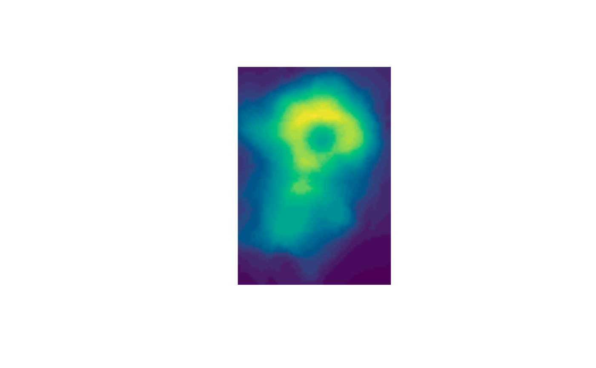

Map numeric values to a color raster
as_colorraster.RdHelper function that converts numeric values to colors and returns a raster image. Useful for visualizing numeric matrices as color backgrounds.
Usage
as_colorraster(x, palette = hcl.colors(30), na.color = "white")Value
A raster object as produced by as.raster().
Details
Values in x are rescaled to the range of the palette using
scales::rescale(), and each value is mapped to a corresponding
color. If x is a matrix, the resulting raster preserves the same
dimensions.
Examples
library(RGraphSpace)
# Convert the volcano matrix to a color raster
img <- as_colorraster(volcano)
plot(img)
